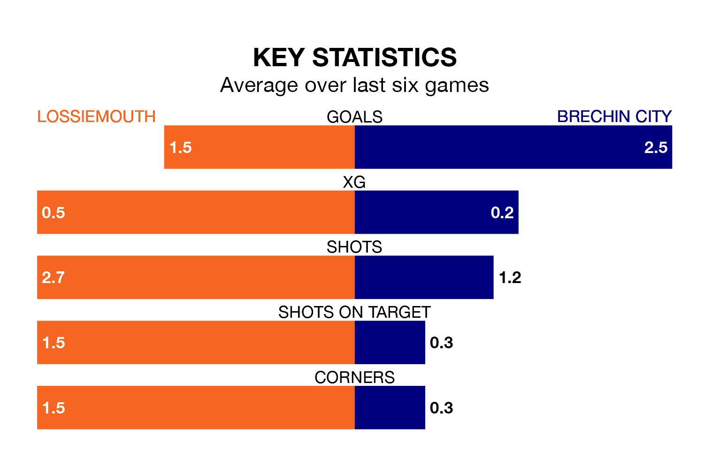

Brechin City visit Lossiemouth at Grant Park on late Wednesday on the back of three consecutive wins in Highland Football League.
Brechin have picked up 12 points from their last six games, and they face a Lossiemouth side who have lost their last two matches, and collected four points from the last possible 18.
Brechin are top of the table after 17 games, of which they have won 14 and drawn one, earning 43 points.
Lossiemouth are 12 places behind City in 13th, with four wins and three draws putting them on 15 points.
With 44 goals in 17 games so far this season, the away side are scoring more than average in the league with 2.6 goals per game. And they are conceding fewer than average, letting in 11 goals at a rate of 0.6 per game.
The hosts, meanwhile, are below average scorers, with 1.2 goals per game, compared to a league average of 1.9. They have conceded 1.9 goals per game.
Over the last two years, Lossiemouth and Brechin have played each other twice. Brechin won both of them.
Their last meeting was on January 21 2023, when Brechin won 3-0 away.
Lossiemouth's last match was on January 13, a 5-1 loss against Banks O' Dee.
Brechin beat Rothes 3-1 last time out, also on January 13.
Updated: 09:18 (UTC), 23/01/24